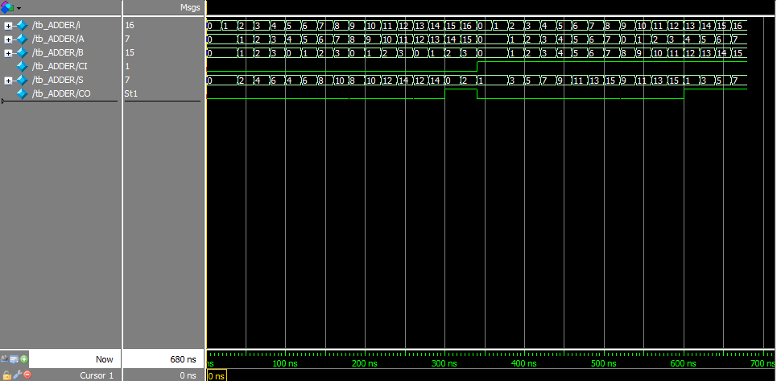

Verilog-HDL記述例 - 4bit桁上げ伝搬加算器
はじめに
本ページでは，4bit桁上げ伝搬加算器のVerilog-HDL記述例を紹介します．
下記の環境で動作を確認しておりますが，動作を保証するものではありません． ソースコードは自己責任の上でご利用ください．
| OS | Microsoft Windows Server 2008 Standard x86 Service Pack 2 |
|---|---|
| Quartus II | 未インストール |
| ModelSim | Mentor Graphics ModelSim-Altera Starter Edition v10.1d |
| FPGA Board | 未実装（シミュレーションによる動作確認のみ） |
半加算器，全加算器，桁上げ伝搬加算器（準備中）
半加算器，全加算器および桁上げ伝搬加算器について簡単に解説する予定です．
Verilog-HDL記述例
はじめに
今回紹介する4bit桁上げ伝搬加算器のVerilog-HDL記述例（以降では，ADDERモジュールと呼びます）では， 最上位モジュール「ADDER」の下に4つの全加算器モジュール「FULL_ADDER」を内包しています． また，「FULL_ADDER」は半加算器モジュール「half_adder」2つと，論理輪ゲート1つで構成されています．
下表に各外部入出力信号の名称と機能をまとめました．
| Node Name | Direction | Description |
|---|---|---|
| A | Input | 数値入力，bit幅: 4 |
| B | Input | 数値入力，bit幅: 4 |
| CI | Input | 桁上がり入力 |
| S | Output | 加算結果出力，bit幅: 4 |
| CO | Output | 桁上がり出力 |
Verilog-HDL記述例（ADDER.v）
4bit桁上げ伝搬加算器を構成する全てのモジュールが，このファイル内に記述されています．
// 4bit adder module
module ADDER(A, B, CI, S, CO);
input [3:0] A;
input [3:0] B;
input CI;
output [3:0] S;
output CO;
wire wire_u0_CO;
wire wire_u1_CO;
wire wire_u2_CO;
FULL_ADDER u0( // bit 0
.A(A[0]),
.B(B[0]),
.CI(CI),
.S(S[0]),
.CO(wire_u0_CO)
);
FULL_ADDER u1( // bit 1
.A(A[1]),
.B(B[1]),
.CI(wire_u0_CO),
.S(S[1]),
.CO(wire_u1_CO)
);
FULL_ADDER u2( // bit 2
.A(A[2]),
.B(B[2]),
.CI(wire_u1_CO),
.S(S[2]),
.CO(wire_u2_CO)
);
FULL_ADDER u3( // bit 3
.A(A[3]),
.B(B[3]),
.CI(wire_u2_CO),
.S(S[3]),
.CO(CO)
);
endmodule
// full adder module
module FULL_ADDER(A, B, CI, S, CO);
input A;
input B;
input CI;
output S;
output CO;
wire wire_u0_s;
wire wire_u0_co;
wire wire_u1_co;
assign CO = wire_u0_co | wire_u1_co;
half_adder u0(
.a(A),
.b(B),
.s(wire_u0_s),
.co(wire_u0_co)
);
half_adder u1(
.a(wire_u0_s),
.b(CI),
.s(S),
.co(wire_u1_co)
);
endmodule
// half adder module
module half_adder(a, b, s, co);
input a;
input b;
output s;
output co;
assign s = a ^ b;
assign co = a & b;
endmodule
テストベンチとRTLシミュレーション
テストベンチ記述例
以下は，ADDERモジュール用のテストベンチ記述例（tb_ADDER.vhd）です． テストベンチ記述，Quartus IIおよびModelSimを用いたRTLシミュレーションの方法については，加算器のRTLシミュレーションが参考になると思います．
`timescale 1ns/1ns
module tb_ADDER();
parameter CP = 20; // global clock period
integer i; // control variable
reg [3:0] A; // inputs
reg [3:0] B;
reg CI;
wire [3:0] S; // outputs
wire CO;
ADDER u0( // circuit under test
.A(A),
.B(B),
.CI(CI),
.S(S),
.CO(CO)
);
initial begin
A = 4'b0; B = 4'b0; CI =1'b0;
for(i = 0; i <= 15; i = i + 1) begin
#CP A = i; B = i % 4;
end
#CP
A = 4'b0; B = 4'b0; CI =1'b1;
for(i = 0; i <= 15; i = i + 1) begin
#CP A = i % 8; B = i;
end
#CP
$display("Simulation End.");
$stop;
end
endmodule
RTLシミュレーション結果
下図に，上記のテストベンチ記述例を使用したRTLシミュレーションの結果を示します．
{kind=link}